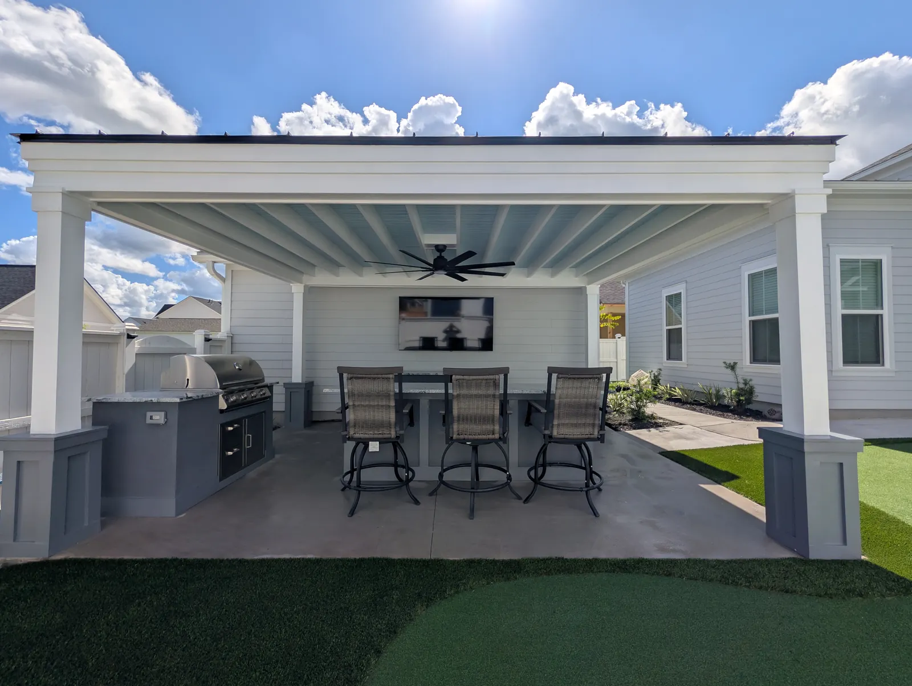

How to Design an Outdoor Living Space in Charleston

Where Most Projects Go Wrong
Most outdoor living projects go wrong in the same way: the structure gets chosen first, then everything else is arranged around it. The order that works is the opposite. Here is how we run a design, in the order the decisions actually get made.

Start With How You Use the Yard, Not What You Want to Build
The first conversation is not about pergolas. It is about where you sit in the evening, how many people are there when you entertain, where the grill has to be so the cook is not stuck alone, where the dog runs, and which window you look out of most.
Our West Ashley cabana started from one sentence: the homeowner wanted somewhere to host parties and watch football. That decided the roof, the TV wall, the size of the seating area and the lighting long before anything was drawn.
Then budget, early and plainly. Most people have no idea what a yard costs. A real range in the first conversation is worth more than a beautiful plan you have to abandon.
Let the House Decide the Style
A yard that suits the architecture reads as designed; one assembled from favourite pieces reads as a collection. Formal and sheared, tropical, or more of a garden — the house usually tells you which, and the answer sets the plant palette, the paving material and the proportions of any structure.
Proportion is where structures are won or lost: post size, beam depth, roof pitch and ceiling height, worked out against the house rather than taken from a standard plan. It is the difference between a pavilion that looks built for the property and one that looks ordered.

Design the Flow Before the Features
Every good outdoor space is really a set of paths between places to sit, cook and swim. Get those lines right and the features fall into place.
- A fire pit needs about 6 feet of clear space around it for chairs and a walkway behind them. Sizing the patio for the pit but not the ring of chairs is the most common planning mistake we see.
- A kitchen needs somewhere for guests to stand that is not in the cook's way, and a bar top is usually how you get it.
- Paths should go where people already walk. A walkway that ignores the desire line gets cut across within a month.
Then the Things You Cannot Add Later
Some decisions are cheap now and expensive forever afterwards. Before any hardscape goes down we run conduit for lighting, a gas line to where a fire pit or grill might go, water for a future kitchen sink or outdoor shower, and sleeves under driveways and walks.
An empty conduit under a new patio costs very little. Getting one under an existing patio means cutting it up and relaying it. Tell us what the yard might become in five years and we will leave you able to do it.
The same logic applies to drainage and grading: they go in first, because they are what nobody can fix afterwards without digging the yard up again.
What It Costs, So You Can Plan the Order
| Patios and pavers | from $18 per sq ft |
|---|---|
| Poured concrete | $12 per sq ft |
| Pergola | $10,000 – $30,000 |
| Pavilion | $30,000 – $90,000+ |
| Outdoor kitchen | $8,000 – $20,000+ |
| Fire pit | $1,000 kit, from $2,500 custom |
| Landscape lighting | about $200 a light, plus a transformer |
| Planting | beds $1,000–$2,000; full landscape $20,000+ |
Ranges come from our own completed projects. Every quote follows a consultation at your home.
Phasing is normal and we would rather you phase than compromise. Patio and structure first, then the kitchen, then planting and lighting, is the usual order — with the conduit and gas run at stage one.
What You Get, and How Long It Takes
- Consultation at your home, with a realistic budget conversation.
- Drawings, with 3D renderings available as an option at additional cost.
- Permits and HOA submissions, prepared and submitted by us. Allow 4 to 6 weeks for permitting.
- Build: a pergola takes one to three weeks, a pavilion six to eight, with our own gas, electrical and plumbing crews.
- Planting and lighting to finish, then we come back to shape the planting as it establishes.
Projects usually start within one to two months of signing.
Design the Water First
2021 IRC R401.3 · Drainage
The code requires the ground to fall at least 6 inches in the first 10 feet away from the house, and any patio or walk inside that zone to slope 2 percent away from it.1 A layout that ignores this has to be redrawn at permit, which is why drainage and grading go in before anything else.
South Carolina did not modify this section.2
Beyond the Code: Proportion
No code says a pavilion has to look right. Brent Hull, the historic millwork specialist, makes the case for the old rule that does: in the classical system the column sets the proportion of everything else. A Doric column is seven times as tall as it is wide at its base, and the beam, trim and openings are all scaled from it.3 A pavilion does not have to be classical to use the idea. When post size, beam depth and roof are worked out against each other and against the house, the structure looks as if it was built for the place; when they are not, a thin post under a heavy roof is the first thing people notice.
References are to the 2021 edition South Carolina enforces today; the 2024 edition takes effect statewide on January 1, 2027. Your local building department decides how any of it applies to a particular property.
Sources
Frequently Asked Questions
How do you design an outdoor living space?
Start with how the yard gets used rather than what you want to build, then let the architecture of the house set the style, then design the flow between cooking, sitting and swimming. Features come after that, and drainage, grading, conduit and gas lines go in before any hardscape.
What should I do first if I am phasing the project?
Patio and structure first, then the kitchen, then planting and lighting. Run conduit, a gas line and water sleeves at stage one, because those are the things that are expensive to add once there is a patio on top of them.
How much does an outdoor living space cost in Charleston?
Patios start around $18 per square foot, pergolas run $10,000 to $30,000, pavilions $30,000 to $90,000 or more, and outdoor kitchens $8,000 to $20,000 or more. Landscape lighting is about $200 a light plus a transformer.
Do you provide drawings or 3D renderings?
You get drawings as part of the design. 3D renderings are available as an option at additional cost, and they are worth it when seeing the space in three dimensions is what makes the decision.
How long does the whole process take?
Allow four to six weeks for permitting, then one to three weeks to build a pergola or six to eight for a pavilion. Projects usually start within one to two months of signing.
See It Built
Projects where we put this into practice.


Planning a Project of Your Own?
See everything we design and build, or get in touch to talk through your ideas with Doug and Zach.